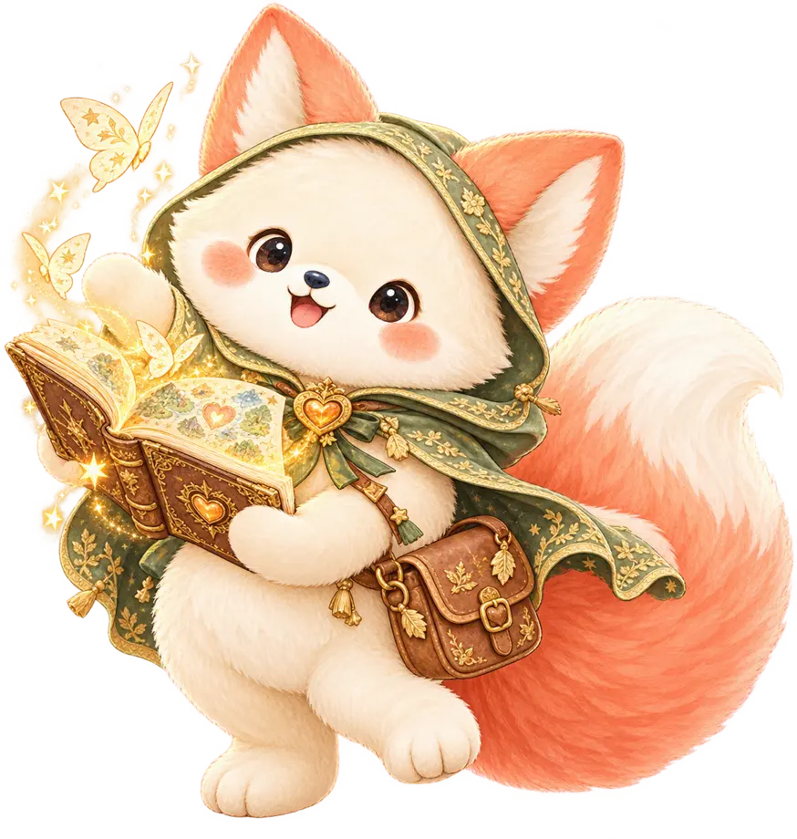

✦ 마음의 숲에 온 걸 환영해 ✦
곰같은여우의마음도감
나를 발견하는 가장 재미있는 방법
16가지 성격마을과 4가지 소다상점에서
지금의 나에게 어울리는 이야기를 골라봐!
가입 없이 무료 · 마음의 이야기를 간직해 봐

첫 번째 이야기 · 성격마을
16가지 성격마을
꼭 나와 똑같을 필요는 없어. 오늘 가장 마음에 드는 친구를 골라 봐!
아직 선택한 유형이 없어요
OPTIONAL · 12 SCENES
아직 내 유형을 모르겠다면?
12개의 짧은 상상 장면을 골라 오늘의 이야기 유형을 추천받아 봐. 언제든 직접 바꿀 수 있어!
1 / 12정답 없는 이야기 놀이
직접 선택하는 창작 이야기입니다. 공식 MBTI® 검사나 전문 심리 진단이 아닙니다.
두 번째 이야기 · 소다상점
혈액형 소다상점
혈액형을 골라서 소다 친구를 만나 봐! 4가지 캐릭터는 재미를 위한 가상 인물이고, 혈액형과 성격의 관련성을 뜻하지 않아.
나의 이야기 보러 가기마음의 보너스 여행
우리 사이, 마음의 다리
친구나 연인의 유형도 골라 봐. 점수 대신 서로에게 건넬 수 있는 한마디를 찾아줄게.
“너 T야?” 마음 말풍선 번역소
같은 걱정도 다른 말투로 전해질 수 있어. 이번엔 어떤 대답을 건네고 싶어?
상황 1 / 4
지금 내 대답은?
나의 답장
지금은 들어주는 게 좋을까, 아니면 같이 방법을 찾아볼까?
상대가 원하는 도움을 먼저 물으면 오해를 줄일 수도 있어.
‘너 T야?’ 밈을 소재로 만든 대화 놀이예요. T도 충분히 다정할 수 있고, F도 논리적으로 해결할 수 있어요. 대답 스타일은 유형 판정이 아닙니다.
오늘의 마지막 이야기
오늘의 마음 극장
어느 날의 주인공이 될까? 유형과 소다를 고르면 나만의 짧은 에피소드가 열려.
마음의 한 줄
혈액형은 성격을 예측하는 과학적 지표가 아닙니다. 모든 결과는 소다상점 세계관의 창작 이야기예요.